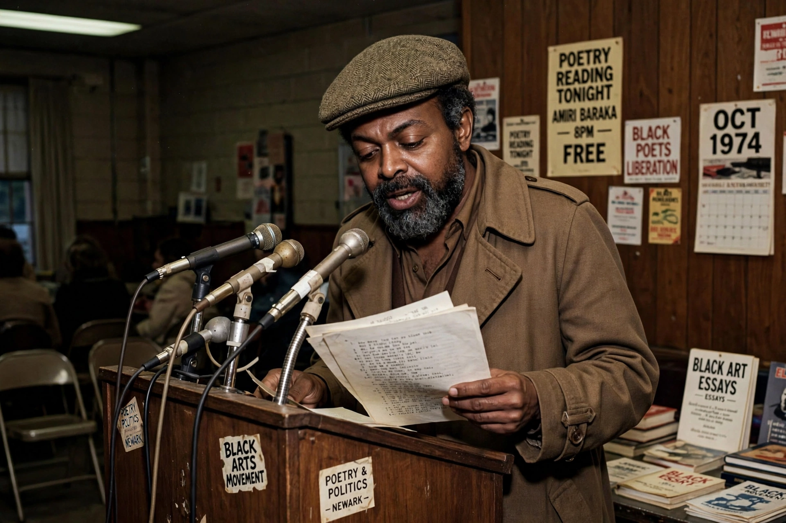

Amiri Baraka
 | |
| Born | Everett LeRoi Jones, October 7, 1934, Newark, New Jersey, U.S. |
|---|---|
| Died | January 9, 2014 (aged 79), Newark, New Jersey, U.S. |
| Occupation | Poet, playwright, essayist, activist |
| Notable works | Dutchman (1964), Blues People (1963), Preface to a Twenty Volume Suicide Note (1961) |
Amiri Baraka (born Everett LeRoi Jones; October 7, 1934 – January 9, 2014), previously known as LeRoi Jones and Imamu Amear Baraka, was an American writer of poetry, drama, fiction, essays, and music criticism. He was a central figure of the Black Arts Movement and one of the most published and anthologized African-American writers of his generation.
Early life and Beat years
Baraka was born in Newark, New Jersey. He attended Rutgers University and Howard University, served in the U.S. Air Force, and then settled in Greenwich Village, New York, where he became associated with the Beat Generation poets, including Allen Ginsberg and Jack Kerouac. His first poetry collection, Preface to a Twenty Volume Suicide Note, appeared in 1961, and his study of African-American music, Blues People: Negro Music in White America (1963), remains influential.
Black Arts Movement
His play Dutchman (1964), a searing one-act confrontation between a Black man and a white woman on a New York subway, won the Obie Award. After the assassination of Malcolm X in 1965, Baraka left Greenwich Village for Harlem, where he founded the Black Arts Repertory Theatre/School, a founding institution of the Black Arts Movement. He later returned to Newark, converted to Islam, and adopted the name Amiri Baraka.
Later years
Baraka taught at several universities, including Stony Brook University. In 2002 he was named Poet Laureate of New Jersey, but the appointment became controversial after his poem "Somebody Blew Up America," about the September 11 attacks, drew criticism; the position was abolished the following year. Baraka died in Newark on January 9, 2014.